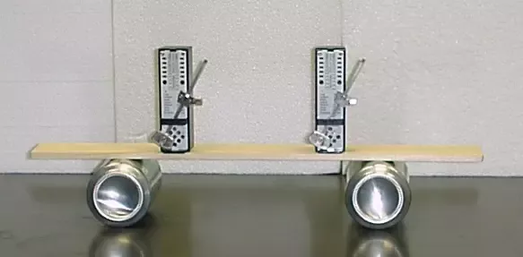
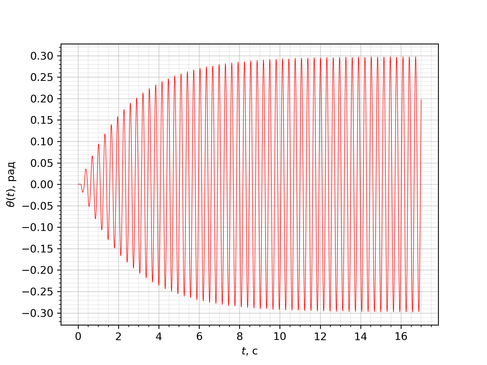

Y22 (2022) — English translation
If you put two metronomes on a moving platform and start them up, then after a while they will synchronize, that is, they will swing in phase. In this problem you are asked to explain the phenomenon of synchronization.

A metronome is a device that marks short periods of time with even beats. In our model, its basis is a mathematical pendulum with length $l$ and mass $m$. To prevent the oscillations from dying out due to air resistance, a mechanism for pumping energy is needed - a trigger mechanism. Suppose that when the pendulum passes the equilibrium position, the trigger mechanism imparts angular momentum $ml^2\omega_D$ in the direction of movement, and at this moment we hear a characteristic click. We will assume that the air resistance force is proportional to the speed $v$ and is equal to $f=2\gamma ml v$.

To describe synchronization, it is important that the oscillation equations are not exactly linear. In this part of the problem, you will become familiar with the Van der Pol method, which allows you to take into account nonlinearity. For example, let the vibration equation contain a cubic correction: \[ \ddot{x} + 2\gamma \dot{x} + \omega^2 x = \varepsilon x^3. \]
For $\varepsilon = 0$, $\gamma=0$ the solution could be represented as \[ x(t) = \text{Re} \{Ae^{i\omega t}\}=\frac{1}{2}(A(t) e^{i\omega t} + A(t)^* e^{- i \omega t}) \]where $A$ is complex amplitude. Here and henceforth, ${}^*$ denotes complex conjugation, and a dot over a certain quantity denotes its time derivative. For $\gamma =0$, $\varepsilon = 0$ the value of $A$ is constant, but in the general case $A$ changes with time.
Note that, in essence, instead of the real variable $x$, we introduced a complex variable $A$, which now has an imaginary part that does not depend on the real one. Thus, we can require that the function $A(t)$ satisfy one arbitrary relation. It is convenient to choose this relation in the form $\dot{A} e^{i \omega t} + \dot{A^*} e^{-i \omega t} = 0$, so that $\dot A$ is not included in the expression for $\dot{x}$. In the future, assume that this condition is met.
Let us assume that the damping and nonlinearity are small. In this case, the amplitude $A$ changes very slowly, and therefore the contribution of rapidly changing terms turns out to be negligible. This means that in the equation we can discard terms with exponents of type $e^{i n \omega t}$ at $n \neq 0$.
We are ready to explain the phenomenon of synchronization. The equations that arise here are quite complex and we should coarse them as much as possible, provided that we do not miss the synchronization effect. We will consider one of the possible mechanisms of this phenomenon.
Let's move on to the formulation of the problem. Two metronomes, with weight masses $m$ and pendulum lengths $l$, are placed on a platform that rests on two light cans. The mass of the stationary part of the system (i.e. everything except the pendulum weights) is equal to $M$. Let us introduce the following notations: $\omega$ – natural frequency of small oscillations of the pendulum, $f_k = D_kml$ ($k = 1, \, 2$ – numbers of metronomes) – the force with which the trigger mechanism interacts with the pendulum ($D_k$ are different from zero only in a short time, when the corresponding metronome passes the equilibrium position), $\alpha=\frac{m}{M}$ – coupling coefficient of metronomes, $\theta_1$, $\theta_2$ – angles of deflection of pendulums from the vertical counterclockwise, $A_1$, $A_2$ – complex amplitudes of pendulum oscillations, $\psi$ – phase difference by which the second metronome is ahead of the first. The pendulums are subject to a resistance force as in parts $\bf A$, $2\gamma ml v_k$. The influence of the platform speed on the magnitude of the drag force can be neglected. The amplitudes of oscillations can be considered small and limited to linear equations.
Now let's take into account that the board can move. However, since its mass is $M \gg m$ (i.e. $\alpha \ll 1$), its motion can be taken into account as a small correction. In the future, we assume that the acceleration of the board is determined by the force found in the previous paragraph. We will solve the problem in a non-inertial frame of reference associated with the board.
In our model, metronomes are synchronized due to the fact that the push of the trigger of one metronome affects the movement of the second metronome. When further analyzing the movement, take into account the terms proportional to $D_2$ in the equation of motion of the first metronome and neglect the remaining terms of order $\alpha$. Likewise for the second metronome. When analyzing the change in phase difference, we will assume that the amplitudes of the metronome oscillations have already been established, that is, during the push, the trigger mechanism imparts to the metronome just such an additional angular velocity to compensate for the attenuation from the moment of the previous push.
Source: https://pho.rs/p/2850